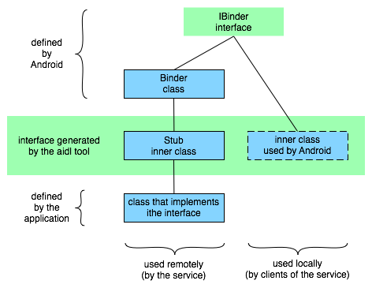

Android applications are written in the Java programming language.
The compiled Java code — along with any data and resource
files required by the application — is bundled by the
aapt
tool into an Android package, an archive file
marked by an .apk suffix. This file is the vehicle
for distributing the application and installing it on mobile devices;
it's the file users download to their devices. All the code in a
single .apk file is considered to be one application.
Android应用程序是用Java编程语言编写的。编译好的Java代码——随同所有应用程序要使用的数据和资源文件一起——使用aapt
tool打包成一个Android包，即一个后缀为.apk的归档文件。此文件是发布应用程序和在移动设备上安装应用程序的有媒介；它是用户下载到他们设备上的文件。在一个.apk文件中的所有代码被认为是一个应用程序。
In many ways, each Android application lives in its own world:
从很多方面来讲，每一个Android程序都运行在自己的空间里：
It's possible to arrange for two applications to share the same user ID,
in which case they will be able to see each other's files. To conserve
system resources, applications with the same ID can also arrange to run
in the same Linux process, sharing the same VM.
可以为两个应用程序安排为使用同一个用户ID，这样，他们的文件相互可见。为为了节省系统资源，拥有相同ID的程序可以作为一个Linux进程运行，分享同一个虚拟机。
A central feature of Android is that one application can make use of elements
of other applications (provided those applications permit it). For example,
if your application needs to display a scrolling list of images and another
application has developed a suitable scroller and made it available to others,
you can call upon that scroller to do the work, rather than develop your own.
Your application doesn't incorporate the code of the other application or
link to it. Rather, it simply starts up that piece of the other application
when the need arises.
Android的一个中心功能就是应用程序可以使用其他应用程序的元素（在提供元素的应用程序允许的情况下）。例如，如果您的应用程序想要显示一系列带有
滑屏效果功能的图片，然后某个应用程序正巧开发出了合适的滑屏的模块，并且同意共享，您就可以调用哪个滑屏模块处理这些图片并显示出来，而不是您自己再去
开发一个。您的应用程序并没有包含或链接到了其他的应用程序的代码。但是当请求发出后，您的应用程序确实可以简单的使用其他程序的部分功能。
For this to work, the system must be able to start an application process
when any part of it is needed, and instantiate the Java objects for that part.
Therefore, unlike applications on most other systems, Android applications don't
have a single entry point for everything in the application (no main()
function, for example). Rather, they have essential components that
the system can instantiate and run as needed. There are four types of components:
为了达成这个过程，系统必须可以再应用程序的某个部分被请求时启动这个程序的进程。然后为那个部分的Java对象创建实例。因此不像其他操作系统上的应用程序那样，Android程序没有一个单一的应用程序入口（例如没有main()函数）。然而他们含有当系统需要时创建实例的实质的组件。组件有四种：
Activity base class.An application might consist of just one activity or, like the text messaging application just mentioned, it may contain several. What the activities are, and how many there are depends, of course, on the application and its design. Typically, one of the activities is marked as the first one that should be presented to the user when the application is launched. Moving from one activity to another is accomplished by having the current activity start the next one.
一个应用程序可能只含有一个活动，或者像上边提到的文本信息程序一样含有几个。有几个活动，这些活动是什么样的取决于您的应用程序是如何设
计的。最典型的是将一个活动设计为第一个活动，应用程序被加载时呈现给用户。从一个活动转到另一个是通过在当前活动开始另一个来实现的。
Each activity is given a default window to draw in. Typically, the window fills the screen, but it might be smaller than the screen and float on top of other windows. An activity can also make use of additional windows — for example, a pop-up dialog that calls for a user response in the midst of the activity, or a window that presents users with vital information when they select a particular item on-screen.
每一个活动提供了一个用以绘制的默认窗口。典型的，窗口填满整个屏幕，但是它覆盖在其他窗口上时，会变得略小一点。一个活动可以使用多个窗口——例如，在窗口中央显示一个需要用户回应的弹出窗口，或者在用户选择屏幕上一个特定项目是时为他显示重要信息的窗口。
The visual content of the window is provided by a hierarchy of views —
objects derived from the base View class. Each view
controls a particular rectangular space within the window. Parent views
contain and organize the layout of their children. Leaf views (those at the
bottom of the hierarchy) draw in the rectangles they control and respond to
user actions directed at that space. Thus, views are where the activity's
interaction with the user takes place. For example, a view might display
a small image and initiate an action when the user taps that image. Android
has a number of ready-made views that you can use — including buttons,
text fields, scroll bars, menu items, check boxes, and more.
窗口的可见内容由一组view层提供——从View基
类衍生出来的对象。每一个view控制窗口中的一块矩形区域。父view包含并组织子view的布局。页view（底层的view）绘制它们管理的矩形，
并响应在“空白”的地方的动作。就是说，view就是活动和用户互动的地方。例如，一个view显示一个小图片，然后初始化用户点击这个小图片后的动作。
Android有很多已做好的view供您选择——包括按钮，文本输入框，滚动条，菜单项，多选列表等。
A view hierarchy is placed within an activity's window by the
Activity.setContentView()
Service base class.A prime example is a media player playing songs from a play list. The player application would probably have one or more activities that allow the user to choose songs and start playing them. However, the music playback itself would not be handled by an activity because users will expect the music to keep playing even after they leave the player and begin something different. To keep the music going, the media player activity could start a service to run in the background. The system would then keep the music playback service running even after the activity that started it leaves the screen.
一个主要的例子就是一个从列表中播放音乐的媒体播放器。播放器程序可能会有一个或几个允许用户选择希望播放的音乐然后显示播放的活动。但是
音乐的回放过程本身不会使用一个活动因为用户希望在切出播放器界面做别的事时音乐也能一直放下去。为了保持播放继续，活动可以启动一个服务在后台运行。然
后即使启动这个服务的活动退出，音乐播放服务也能继续运行。
It's possible to connect to (bind to) an ongoing service (and start the service if it's not already running). While connected, you can communicate with the service through an interface that the service exposes. For the music service, this interface might allow users to pause, rewind, stop, and restart the playback.
您可以连接到（绑定到）一个正在运行的服务（若果服务没在运行，就会启动这个服务）。连接后，您就可以通过服务暴露出来的接口与其进行通信。对音乐播放服务，这个接口可能允许用户对播放进行暂停、回退、停止、重播等操作。
Like activities and the other components, services run in the main thread of the application process. So that they won't block other components or the user interface, they often spawn another thread for time-consuming tasks (like music playback). See Processes and Threads, later.
An application can have any number of broadcast receivers to respond to any
announcements it considers important. All receivers extend the BroadcastReceiver base class.
应用程序可以含有任意数量的广播接收器对任意其认为重要的的广播进行响应。所有的广播接收器均由BroadcastReceiver基类衍生
Broadcast receivers do not display a user interface. However, they may start
an activity in response to the information they receive, or they may use
the BroadcastReceiver to alert the user. Notifications
can get the user's attention in various ways — flashing
the backlight, vibrating the device, playing a sound, and so on. They
typically place a persistent icon in the status bar, which users can open to
get the message.
ContentProvider base
class to implement a standard set of methods that enable other applications
to retrieve and store data of the type it controls. However, applications
do not call these methods directly. Rather they use a ContentResolver object and call its methods instead.
A ContentResolver can talk to any content provider; it cooperates with the
provider to manage any interprocess communication that's involved.See the separate Content Providers document for more information on using content providers.
Whenever there's a request that should be handled by a particular component,
Android makes sure that the application process of the component is running,
starting it if necessary, and that an appropriate instance of the component
is available, creating the instance if necessary.
当有应被特殊的组件操作的请求时，Android会确认这个组件是否正在运行，如果未在运行，则启动它，如果正在运行则检测需要的类是否实例化，如未实例化，则为类创建实例。
Content providers are activated when they're targeted by a request from a
ContentResolver. The other three components — activities, services,
and broadcast receivers — are activated by asynchronous messages
called intents. An intent is an Intent
object that holds the content of the message. For activities and services,
it names the action being requested and specifies the URI of the data to
act on, among other things. For example, it might convey a request for
an activity to present an image to the user or let the user edit some
text. For broadcast receivers, the Intent object names the action being
announced. For example, it might announce to interested parties that the
camera button has been pressed.
内容提供者获得ContentResolver请求的指向后，会被激活。另外的三种组件——活动，服务，广播接收器——是靠异一种叫做intents（意图）的异步消息激活的。意图是 承载了这种异步消息内容的 Intent的对象。对于活动和服务，它主要是为被请求的动作命名，然后指定操作此数据的URI。例如，它可能携带让一个活动为用户展现一张图片或者让用户编辑文本的请求。对广播接收器，Intent对象为将要广播的内容命名。例如，它可能会向有兴趣的接收器发布照相键被按下的广播。
There are separate methods for activiating each type of component:
激活不同的组件需使用不同的方法：
Context.startActivity()Activity.startActivityForResult()getIntent()onNewIntent()One activity often starts the next one. If it expects a result back from
the activity it's starting, it calls startActivityForResult()
instead of startActivity(). For example, if it starts an activity
that lets the user pick a photo, it might expect to be returned the chosen
photo. The result is returned in an Intent object that's passed to the
calling activity's onActivityResult()startActivityForResult()方法来代替startActivity()方法。例如，如果一个老活动开启了一个让用户照相的新活动，又希望从新活动获得这张照片。新活动的运行结果是通过一个 传递给老活动的
A service is started (or new instructions are given to an ongoing
service) by passing an Intent object to Context.startService()onStart()
Similarly, an intent can be passed to Context.bindService()onBind()bindService() can
optionally start it.) For example, an activity might establish a connection
with the music playback service mentioned earlier so that it can provide
the user with the means (a user interface) for controlling the playback.
The activity would call bindService() to set up that connection,
and then call methods defined by the service to affect the playback. 服务通过向bindService()来启动它。）例如上面提到过的音乐播放服务，活动会希望建立一个与此服务的连接以向用户提供控制播放的功能（例如一个UI界面）。这时活动就会调用bindService()来建立连接，然后调用服务中定义的方法来控制播放。
A later section, Remote procedure calls, has more details
about binding to a service. 之后的章节会讲到Remote procedure calls，那有更详细的绑定服务的信息。
An application can initiate a broadcast by passing an Intent object to
methods like Context.sendBroadcast()Context.sendOrderedBroadcast()Context.sendStickyBroadcast()onReceive()
For more on intent messages, see the separate article,
Intents
and Intent Filters.
获得更多关于意图的信息，查看单独的章节Intents
and Intent Filters。
A content provider is active only while it's responding to a request from a ContentResolver. And a broadcast receiver is active only while it's responding to a broadcast message. So there's no need to explicitly shut down these components.
内容提供者只有在响应来自ContentResolver的请求时才会处于激活状态。广播接收器只有在响应广播信息时才处于激活状态。所以没有必要显式地关闭这些组件。
Activities, on the other hand, provide the user interface. They're in a long-running conversation with the user and may remain active, even when idle, as long as the conversation continues. Similarly, services may also remain running for a long time. So Android has methods to shut down activities and services in an orderly way:
活动，相反的，提供了用户界面。他们会与用户长时间地对话，而且可能在整个对话过程，即使处于空闲状态，都保持运行状态。同样的，服务也可能会运行很长时间。因此，Android提供了下列的关闭活动和服务的方法：
finish()startActivityForResult()) by
calling finishActivity()活动可以通过调用他的finish()方法进行关闭。一个活动也可以调用finishActivity()关闭另一个活动（但只能是由他调用startActivityForResult()启动的）。
stopSelf()Context.stopService()一个服务可以通过调用他的stopSelf()方法关闭，或者调用Context.stopService()方法关闭。
Components might also be shut down by the system when they are no longer being used or when Android must reclaim memory for more active components. A later section, Component Lifecycles, discusses this possibility and its ramifications in more detail.
当组件不会再被使用时，或Android必须回收内存以运行其他组件时，系统会自动关闭组件。后续的Component Lifecycles章节中详细讨论了这种可能和其后果。
Before Android can start an application component, it must learn that
the component exists. Therefore, applications declare their components
in a manifest file that's bundled into the Android package, the .apk
file that also holds the application's code, files, and resources.
Android启动一个新的应用程序组件之前，他必须知道这个组件确实存在。因此，应用程序在清单文件中声明了他的全部组件。清单文件随同应用程序的代码、文件、资源一同打包在了Android包中，即.apk文件中。
The manifest is a structured XML file and is always named AndroidManifest.xml for all applications. It does a number of things in addition to declaring the application's components, such as naming any libraries the application needs to be linked against (besides the default Android library) and identifying any permissions the application expects to be granted.
清单文件是一个结构化的XML文件，同时在所有的应用程序都被命名为AndroidManifest.xml。除了声明应用程序的组件他还有很多功用，例如为所有应用程序需要进行连接的库命名（除了默认的Android库）还有识别所有应用程序期望获得的权限。
But the principal task of the manifest is to inform Android about the application's components. For example, an activity might be declared as follows:
但是清单文件的主要任务还是为Android提供应用程序的组件信息。例如，一个活动可能会像下面这样定义：
<?xml version="1.0" encoding="utf-8"?>
<manifest . . . >
<application . . . >
<activity android:name="com.example.project.FreneticActivity"
android:icon="@drawable/small_pic.png"
android:label="@string/freneticLabel"
. . . >
</activity>
. . .
</application>
</manifest>
The name attribute of the
<activity>
element names the Activity subclass that implements the
activity. The icon and label attributes point to
resource files containing an icon and label that can be displayed
to users to represent the activity.
<activity>元素的name属性命名了实现了activity的Activity子类。icon和label属性指向了
包含被显示给用户来代表这个活动的图标和标题 的文件。
The other components are declared in a similar way —
<service>
elements for services,
<receiver>
elements for broadcast receivers, and
<provider>
elements for content providers. Activities, services, and content providers
that are not declared in the manifest are not visible to the system and are
consequently never run. However, broadcast receivers can either be
declared in the manifest, or they can be created dynamically in code
(as BroadcastReceiver objects)
and registered with the system by calling
Context.registerReceiver()
其他的组件的声明方式类似——声明服务用<service>元素，使用<receiver>声明广播接收器，使用<provider>声明内容提供者。没被声明的活动，服务，内容提供者对Android系统是不可见的，因此永远都不会被运行。但是广播接收器可以在清单文件中声明也可在代码中动态的创建（创建BroadcastReceiver对象），然后调用Context.registerReceiver()
For more on how to structure a manifest file for your application, see
The
AndroidManifest.xml File.
更多有关如何为您的应用程序构造一个清单文件，请参见The
AndroidManifest.xml File。
An Intent object can explicitly name a target component. If it does,
Android finds that component (based on the declarations in the manifest
file) and activates it. But if a target is not explicitly named,
Android must locate the best component to respond to the intent.
It does so by comparing the Intent object to the intent filters
of potential targets. A component's intent filters inform Android of
the kinds of intents the component is able to handle. Like other
essential information about the component, they're declared in the
manifest file. Here's an extension of the previous example that adds
two intent filters to the activity:
Intent对象会详细地指明一个目标组件。Android会找到那个组件（根据清单文件中的声明）然后激活它。但是如果目标没有被明确指出，
Android就必须找到能响应这个意图的最佳组件。Android将Intent对象和可能的目标组件的意图匹配器进行比较来找出这个最佳组件。组件的
意图匹配器告诉Android这个组件能操作什么样的意图。就像组件的其他重要信息一样，它们声明于清单文件中。这里是上边那个例子的增扩版，向活动中添
加了两个意图匹配器。
<?xml version="1.0" encoding="utf-8"?>
<manifest . . . >
<application . . . >
<activity android:name="com.example.project.FreneticActivity"
android:icon="@drawable/small_pic.png"
android:label="@string/freneticLabel"
. . . >
<intent-filter . . . >
<action android:name="android.intent.action.MAIN" />
<category android:name="android.intent.category.LAUNCHER" />
</intent-filter>
<intent-filter . . . >
<action android:name="com.example.project.BOUNCE" />
<data android:mimeType="image/jpeg" />
<category android:name="android.intent.category.DEFAULT" />
</intent-filter>
</activity>
. . .
</application>
</manifest>
The first filter in the example — the combination of the action
"android.intent.action.MAIN" and the category
"android.intent.category.LAUNCHER" — is a common one.
It marks the activity as one that should be represented in the
application launcher, the screen listing applications users can launch
on the device. In other words, the activity is the entry point for
the application, the initial one users would see when they choose
the application in the launcher.
例子中的第一个意图匹配器——"android.intent.action.MAIN"动作和"android.intent.category.LAUNCHER目录的结合——是常见的一种。它标明这个活动要在程序菜单上列出，就是要在列出设备上用户可用的应用程序的那一屏。换句话说，这个活动是这个应用程序的入口点，用户从菜单中选择运行这个程序后见到的初始的活动。
The second filter declares an action that the activity can perform on
a particular type of data.
第二个匹配器声明了这个活动能处理某种形式的数据。
A component can have any number of intent filters, each one declaring a
different set of capabilities. If it doesn't have any filters, it can
be activated only by intents that explicitly name the component as the
target.
一个组件可以有任意多个意图匹配器，每一个声明这个组件的一种能力。如果一个组件没有任何意图匹配器，他就只能被明确的指明他作为目标组件的意图激活。
For a broadcast receiver that's created and registered in code, the
intent filter is instantiated directly as an IntentFilter
object. All other filters are set up in the manifest.
对在代码运行时创建并注册的广播接收器，意图匹配器被作为IntentFilter对象直接实例化。
For more on intent filters, see a separate document, Intents
and Intent Filters.
有关意图匹配器更多信息，参见单独的Intents
and Intent Filters文档。
As noted earlier, one activity can start another, including one defined
in a different application. Suppose, for example, that you'd like
to let users display a street map of some location. There's already an
activity that can do that, so all your activity needs to do is put together
an Intent object with the required information and pass it to startActivity(). The map viewer will display the map. When the user
hits the BACK key, your activity will reappear on screen.
上边提到过，一个活动能启动另一个活动，甚至是在别的应用程序中定义的活动。设想，例如，您想让用户显示某地的街区地图。而且已经有了一个可以完成此事的活动，所以您的活动要做的仅仅是将请求信息放进一个Intent对象中，将这个Intent对象传递给startActivity()。地图查看器这个活动就会显示出地图。当用户点击BACK按钮之后，您的活动就会重新出现在屏幕上。
To the user, it will seem as if the map viewer is part of the same application
as your activity, even though it's defined in another application and runs in
that application's process. Android maintains this user experience by keeping
both activities in the same task. Simply put, a task is what the user
experiences as an "application." It's a group of related activities, arranged
in a stack. The root activity in the stack is the one that began the task
— typically, it's an activity the user selected in the application launcher.
The activity at the top of the stack is one that's currently running —
the one that is the focus for user actions. When one activity starts another,
the new activity is pushed on the stack; it becomes the running activity.
The previous activity remains in the stack. When the user presses the BACK key,
the current activity is popped from the stack, and the previous one resumes as
the running activity.
对用户来说这个地图查看器就好像您的应用程序中的活动一样，虽然这个地图查看器是定义在其他应用程序中而且运行在那个应用程序的进程中。Android将您的活动和那个借用的活动放在同一个task中，
以维持用户体验。简单来讲任务就是用户觉得好像是一个“应用程序”的东西。任务就是以栈的形式组织起来起来的相互关联的一组活动。栈中最底部的是任务的起
始活动——一般是用户在滑出的程序列表中选择启动的活动。最顶部的是正在运行的活动——用户正在关注操作的。当一个活动开启另一个时，新启动的活动被压入
栈中；并且成为正在运行的活动。旧一个活动还在栈中。当用户按下BACK键后，正在运行的活动被弹出栈，旧一个恢复成为正在运行的活动。
The stack contains objects, so if a task has more than one instance of the same
Activity subclass open — multiple map viewers, for example — the
stack has a separate entry for each instance. Activities in the stack are never
rearranged, only pushed and popped.
栈中包含了对象，因此如果一个任务中开启了 同一个Activity子类的 多个对象——例如，多个地图浏览——则栈对每一个实例都有一个分开的入口。栈中的活动不会被重新排序，只会被压入、弹出。
A task is a stack of activities, not a class or an element in the manifest file.
So there's no way to set values for a task independently of its activities.
Values for the task as a whole are set in the root activity. For example, the
next section will talk about the "affinity of a task"; that value is read from
the affinity set for the task's root activity.
任务是由栈中的活动组成的，而不是清单文件中声明的某个类或元素。所以无法单独为一个任务设定确定的活动的信息。任务的所有信息都是设定在根活动中的。例如，下一个章节会讲到“任务的亲和度”；亲和度信息就是从任务的根活动中获取的。
All the activities in a task move together as a unit. The entire task (the entire
activity stack) can be brought to the foreground or sent to the background.
Suppose, for instance, that the current task has four activities in its stack
— three under the current activity. The user presses the HOME key, goes
to the application launcher, and selects a new application (actually, a new task).
The current task goes into the background and the root activity for the new task is displayed.
Then, after a short period, the user goes back to the home screen and again selects
the previous application (the previous task). That task, with all four
activities in the stack, comes forward. When the user presses the BACK
key, the screen does not display the activity the user just left (the root
activity of the previous task). Rather, the activity on the top of the stack
is removed and the previous activity in the same task is displayed.
任务中的所有活动是作为一个整体运转的。整个任务（一个栈的所有活动）可以被送到前台或推到后台。假设，例如，现在有一个正在运行的任务，栈中有四个活动
——正在运行的活动下边有三个，这是用户按下了HOME键，回到了应用程序的列表然后运行了一个新的应用程序（事实上，是一个新的任务）。则旧一个任务就
被推到了后台，新一个任务的根活动被现实。一段时间过后用户回到了应用程序列表，又选择了旧一个应用程序（旧一个任务）。则旧一个任务的所有栈中的四个活
动就都被送到了前台。这时用户如果按下BACK建屏幕不会回到用户刚离开的活动（就是新一个任务的跟活动）。而是旧一个任务的栈顶活动被弹出，下一个活动顶上，并被显示出来。
The behavior just described is the default behavior for activities and tasks.
But there are ways to modify almost all aspects of it. The association of
activities with tasks, and the behavior of an activity within a task, is
controlled by the interaction between flags set in the Intent object that
started the activity and attributes set in the activity's
<activity>
element in the manifest. Both requester and respondent have a say in what happens.
上面描述的过程是活动和任务的默认动作流程。但是那个流程很多方面都是可修改的。活动和任务的组合还有任务中的活动是由
开启活动的Intent对象中设定的控制标 和 清单文件中活动的<activity>元素的属性
共同控制的。
In this regard, the principal Intent flags are:
这种情况下，重要的Intent控制标有：
FLAG_ACTIVITY_NEW_TASK
FLAG_ACTIVITY_CLEAR_TOP
FLAG_ACTIVITY_RESET_TASK_IF_NEEDED
FLAG_ACTIVITY_SINGLE_TOP
The principal <activity> attributes are:
重要的<activity>属性有：
taskAffinity
launchMode
allowTaskReparenting
clearTaskOnLaunch
alwaysRetainTaskState
finishOnTaskLaunch
The following sections describe what some of these flags and attributes do, how they interact, and what considerations should govern their use.
下面的章节描述了这些控制标和属性的作用，如何相连发生作用，在使用过程中的注意事项。
By default, all the activities in an application have an affinity for each
other — that is, there's a preference for them all to belong to the
same task. However, an individual affinity can be set for each activity
with the taskAffinity attribute of the <activity> element.
Activities defined in different applications can share an affinity, or activities
defined in the same application can be assigned different affinities.
The affinity comes into play in two circumstances: When the Intent object
that launches an activity contains the FLAG_ACTIVITY_NEW_TASK flag,
and when an activity has its allowTaskReparenting attribute set
to "true".
默认的，一个应用程序中的所有活动之间都互有 亲和度——就是他们属于一个任务的优先权。但是，您可以通过每个活动的<activity>元素的taskAffinity属相为某个活动设定单独的亲和度。不同程序中定义的活动可以共享一个亲和度，一个应用程序中的不同活动可以定义不同的亲和度。亲和度在两种情况下有用：一种情况是当激活活动的Intent对象包含了FLAG_ACTIVITY_NEW_TASK控制标，另一种情况是活动将allowTaskReparenting属性设置为了"true"。
FLAG_ACTIVITY_NEW_TASKFLAG_ACTIVITY_NEW_TASK控制标startActivity(). It's pushed
onto the same stack as the caller. However, if the Intent object passed
to startActivity() contains the FLAG_ACTIVITY_NEW_TASK
flag, the system looks for a different task to house the new activity.
Often, as the name of the flag implies, it's a new task. However, it
doesn't have to be. If there's already an existing task with the same
affinity as the new activity, the activity is launched into that task. If
not, it begins a new task.startActivity()向任务中添加一个活动。新添加的活动会压入添加他的活动所在栈。但是，如果传递给startActivity()的Intent对象中含有FLAG_ACTIVITY_NEW_TASK控制标，系统会将新活动压入别的栈。通常，就像控制标的字面意思一样，会是一个新的任务。但是，不是一定要压入新的栈。如果已经有了一个亲和度和新活动相同的任务，活动就被压入那个任务的栈中。如果没有，才会新建任务。allowTaskReparenting
attribute——allowTaskReparenting属性allowTaskReparenting attribute set
to "true", it can move from the task it starts in to the task
it has an affinity for when that task comes to the fore. For example,
suppose that an activity that reports weather conditions in selected
cities is defined as part of a travel application. It has the same
affinity as other activities in the same application (the default
affinity) and it allows reparenting. One of your activities
starts the weather reporter, so it initially belongs to the same task as
your activity. However, when the travel application next comes forward,
the weather reporter will be reassigned to and displayed with that task.allowTaskReparenting属性设为"true"，他可以
在具有亲和度的任务被送到前台时
从开启他的任务移到亲和的任务中。例如，假设有一个已经做好的旅行的应用程序，定义了一个报告选择的城市的天气情况的活动。这个活动和这个应用程序中其他
活动有相同亲和度（默认的亲和度），同时允许重定父级。您自己的一个应用程序中的一个活动开启了这个天气报告活动，他初始情况是处于您自己的应用程序的任
务中。但是当这个旅行应用程序运行并被切换到前台后，天气报告活动就会被重新连接
到旅行应用程序中，并在那个任务中显示。
If an .apk file contains more than one "application"
from the user's point of view, you will probably want to assign different
affinities to the activities associated with each of them.
如果一个.apk 文件包含了多个用户看来的“应用程序”，您可能会为和每个“应用程序”相关的活动设定不同的亲和度。
There are four different launch modes that can be assigned to an <activity> element's
launchMode
attribute:
下面是可以被设为<activity>元素launchMode属性的四种启动模式：
"standard" (the default mode)
——标准（默认的）
"singleTop"
"singleTask"
"singleInstance"
The modes differ from each other on these four points:
每个任务都有以下四方面的特点：
standard" and "singleTop" modes, it's the task that
originated the intent (and called
startActivity()FLAG_ACTIVITY_NEW_TASKstandard"和"singleTop"模式，是装入发出意图（调用了startActivity()）的任务——除非Intent对象含有FLAG_ACTIVITY_NEW_TASK控制标。后种情况流程如前边Affinities and new tasks章节所述。
In contrast, the "singleTask" and "singleInstance" modes mark
activities that are always at the root of a task. They define a task; they're
never launched into another task.
相反的，使用"singleTask"标记和"singleInstance"标记始终为根活动的活动。开启这样的活动会新建一个任务；而不是装入某个正在运行的任务。
Whether there can be multiple instances of the activity.
A "standard" or "singleTop" activity can be instantiated
many times. They can belong to multiple tasks, and a given task can have
multiple instances of the same activity.
standard"或"singleTop"活动可以被多次实例化。他们可以属于多个任务，同样的活动可以在一个确定的任务中有多个实例。In contrast, "singleTask" and "singleInstance" activities
are limited to just one instance. Since these activities are at the root
of a task, this limitation means that there is never more than a single
instance of the task on the device at one time.
singleTask和"singleInstance"的活动只能有一个实例。因为这些活动是任务的根活动，这种限制意味着一个任务在同一时间只能有一个。Whether the instance can have other activities in its task.
A "singleInstance" activity stands alone as the only activity in its
task. If it starts another activity, that activity will be launched into a
different task regardless of its launch mode — as if FLAG_ACTIVITY_NEW_TASK was in the intent. In all other respects, the
"singleInstance" mode is identical to "singleTask".
所在任务中是否允许有其他活动。"singleInstance"活动单独运行在一个任务中。如果他开启另一个活动，新一个活动不论启动模式都会运行在新任务中——就好像用带有FLAG_ACTIVITY_NEW_TASK控制标的Intent对象激活似的。其他方面"singleInstance"与"singleTask"相同。
The other three modes permit multiple activities to belong to the task.
A "singleTask" activity will always be the root activity of the task,
but it can start other activities that will be assigned to its
task. Instances of "standard" and "singleTop"
activities can appear anywhere in a stack.
另外三个模式允许任务中存在多个活动。"singleTask"活动将总是任务的根活动，但是由他启动的其他活动会被装入他所在的任务。"standard"和"singleTop"活动能在任务栈中任何任何位置出现。
standard" mode, a
new instance is created to respond to every new intent. Each instance
handles just one intent. For the "singleTop" mode, an existing
instance of the class is re-used to handle a new intent if it resides
at the top of the activity stack of the target task. If it does not
reside at the top, it is not re-used. Instead, a new instance
is created for the new intent and pushed on the stack.
standard"的模式，每次获得新意图时都会用新的实例响应。每个实例响应一个意图。"singleTop"模式中，如果意图响应类实例存在且在
意图的目标任务 栈的栈顶，那么意图响应类实例将会被重用。如果存在但不再栈顶，则不会被重用。新实例被创建并压入栈顶。
For example, suppose a task's activity stack consists of root activity A with
activities B, C, and D on top in that order, so the stack is A-B-C-D. An intent
arrives for an activity of type D. If D has the default "standard" launch
mode, a new instance of the class is launched and the stack becomes A-B-C-D-D.
However, if D's launch mode is "singleTop", the existing instance is
expected to handle the new intent (since it's at the top of the stack) and the
stack remains A-B-C-D.
例如，假设 一个任务的几个活动是 根活动A，活动B，C，D
的顺序，栈内就是A-B-C-D。这时收到一个类D进行响应的意图。如果D是"standard"启动模式，则将创建类的新实例，栈内变成A-B-C-D-D。但是如果D是"singleTop"启动模式，用以响应新意图的实例已经存在（而且已经在栈顶），栈保持A-B-C-D不变。
If, on the other hand, the arriving intent is for an activity of type B, a new
instance of B would be launched no matter whether B's mode is "standard"
or "singleTop" (since B is not at the top of the stack), so the resulting
stack would be A-B-C-D-B.
如果，另一种情况，收到一个类B响应的意图，不管B的启动类型是"standard"还是"singleTop"（因为B不在栈顶），新实例都会被创建，之后的栈会变成A-B-C-D-B。
As noted above, there's never more than one instance of a "singleTask"
or "singleInstance" activity, so that instance is expected to handle
all new intents. A "singleInstance" activity is always at the top of
the stack (since it is the only activity in the task), so it is always in
position to handle the intent. However, a "singleTask" activity may
or may not have other activities above it in the stack. If it does, it is not
in position to handle the intent, and the intent is dropped. (Even though the
intent is dropped, its arrival would have caused the task to come to the
foreground, where it would remain.)
就像前面已经提到过的，"singleTask"和"singleInstance"活动的类永远不可能会出现多个实例。所以他们的类就会处理所有的收到的意图。"singleInstance"活动永远是任务的栈的最顶活动（因为他是任务中的唯一活动），因此他也总可以处理一个意图。但是在"singleTask"活动栈位之上可能也可能没有另外的活动。如果有，那么他就不能对新到的意图进行处理，这个意图就丢失了。（即使意图已经丢失，意图的收到也会出发任务使其被送到并保持在前台。）
When an existing activity is asked to handle a new intent, the Intent
object is passed to the activity in an
onNewIntent()getIntent()
当一个已有的活动被请求去处理一个新的意图，Intent对象会通过onNewIntent()的调用传递给这个活动。（传递进来的原始的Intent对象可以通过调用getIntent()获取。）
Note that when a new instance of an Activity is created to handle a new intent, the user can always press the BACK key to return to the previous state (to the previous activity). But when an existing instance of an Activity handles a new intent, the user cannot press the BACK key to return to what that instance was doing before the new intent arrived.
注意，当创建一个新的Activity类的实例来处理一个新收到的意图时，用户可以按BACK键回到上一个状态（上一个活动）。但是使用一个已有的Activity类实例操作新收到的意图时，用户不能通过按下BACK键回到这个实例在接受到新意图之前的状态。
For more on launch modes, see the description of the
<activity>
element.
启动模式的更多信息，参见清单文件<activity>元素的描述。
If the user leaves a task for a long time, the system clears the task of all activities except the root activity. When the user returns to the task again, it's as the user left it, except that only the initial activity is present. The idea is that, after a time, users will likely have abandoned what they were doing before and are returning to the task to begin something new.
如果用户长时间没有使用一个运行着的任务，系统会将任务和其中除根活动以外的所有活动清理掉。当用户再次使用这个任务时，也是用户当 初离开的原因，希望只显示第一个活动，即初始状态。我们认为，用户很长时间不用这个任务，就是放弃了先前做出的修改，再次回到这个任务是要重新开始。
That's the default. There are some activity attributes that can be used to control this behavior and modify it:
这是默认的情况，但是您可以更改下列的活动的属性来控制这个机制：
alwaysRetainTaskState
attribute——alwaysRetainTaskState属性true" in the root activity of a
task, the default behavior just described does not happen. The task retains all
activities in its stack even after a long period.true"，上面描述的默认的流程就不会发生。任务会保持其栈中所有的活动，无论用户有多长时间没有使用。clearTaskOnLaunch
attribute——clearTaskOnLaunch属性true" in the root activity of a task,
the stack is cleared down to the root activity whenever the user leaves the task
and returns to it. In other words, it's the polar opposite of
alwaysRetainTaskState. The user always returns to the task in its
initial state, even after a momentary absence.true"，用户离开任务后一回来，系统就清除栈中除根活动外的所有活动。换句话说，这是alwaysRetainTaskState的极端反面情况。即使用户只是离开一会，任务也会变回初始的状态。finishOnTaskLaunch
attribute——finishOnTaskLaunch属性clearTaskOnLaunch, but it operates on a
single activity, not an entire task. And it can cause any activity to go
away, including the root activity. When it's set to "true", the
activity remains part of the task only for the current session. If the user
leaves and then returns to the task, it no longer is present.clearTaskOnLaunch，但是finishOnTaskLaunch针对对单一活动，不是整个任务。而且他能关闭栈中任何活动，包括根活动。当他被设为"true"时，这个活动只是当前属于这个任务，用户离开，再回到这个任务，他就被关闭了。
There's another way to force activities to be removed from the stack.
If an Intent object includes the FLAG_ACTIVITY_CLEAR_TOPstandard", it too
will be removed from the stack, and a new instance will be launched to handle
the incoming intent. That's because a new instance is always created for
a new intent when the launch mode is "standard".
还有一种方法能将活动从栈中强行移除。如果一个Intent对象包含有FLAG_ACTIVITY_CLEAR_TOP控制标，而且目标任务中已经有一个处理此意图的活动的实例，则所有此活动栈位之上的所有活动实例都被移除，然后此活动可以对意图进行响应。如果此活动的启动模式是"standard"，那么他自己也会被移除，新活动被建立，启动，来响应这个意图。因为如果启动模式是"standard"，则每一个意图都会用一个新的实例进行处理。
FLAG_ACTIVITY_CLEAR_TOP is most often used in conjunction
with FLAG_ACTIVITY_NEW_TASK. When used together, these flags are
a way of locating an existing activity in another task and putting it in
a position where it can respond to the intent.
FLAG_ACTIVITY_CLEAR_TOP通常会和FLAG_ACTIVITY_NEW_TASK联合使用。一起使用时，这个组合是
找到另一个任务中的已有活动然后将它转入新的任务中以响应一个意图的 一种方法。
An activity is set up as the entry point for a task by giving it
an intent filter with "android.intent.action.MAIN" as the
specified action and "android.intent.category.LAUNCHER" as
the specified category. (There's an example of this type of filter
in the earlier Intent Filters section.)
A filter of this kind causes an icon and label for the activity to be
displayed in the application launcher, giving users a way both to
launch the task and to return to it at any time after it has been
launched.
您可以 通过给活动添加一个"android.intent.action.MAIN"
的意图匹配器来指定动作，一个"android.intent.category.LAUNCHER"来指定其显示在应用程序列表中
来将这个活动设置为任务的入口活动。（上边的Intent Filters章节中有这两个类型的意图匹配器的例子。）这样的匹配器会使应用程序在应用程序列表中显示其图标和标题，使用户能运行他或在运行后的任何时候回到他。
This second ability is important: Users must be able to leave a task
and then come back to it later. For this reason, the two launch modes
that mark activities as always initiating a task, "singleTask"
and "singleInstance", should be used only when the activity has
a MAIN and LAUNCHER filter.
Imagine, for example, what could happen if the filter is missing:
An intent launches a "singleTask" activity, initiating a new task,
and the user spends some time working in that task. The user then presses
the HOME key. The task is now ordered behind and obscured by the home
screen. And, because it is not represented in the application launcher,
the user has no way to return to it.
第二个功能很重要：用户必须能够在离开这个任务后能再回到当初的状态。由于这个原因，将活动设定为切回后初始化任务的"singleTask"和"singleInstance"启动模式只能用在有MAIN和LAUNCHER匹配器的活动里。设想，例如，如果用在没有这两个匹配器的活动中会出现什么现象：一个意图激活了一个"singleTask"活动，初始化了一个新的任务，用户在这个任务中做了点什么，然后用户按下HOME键。这个活动就被退到后台，并被桌面屏幕掩盖，然后，由于他不在应用程序列表中显示，用户没法再回到那个活动中去了。
A similar difficulty attends the FLAG_ACTIVITY_NEW_TASK flag.
If this flag causes an activity to
begin a new task and the user presses the HOME key to leave it, there
must be some way for the user to navigate back to it again. Some
entities (such as the notification manager) always start activities
in an external task, never as part of their own, so they always put
FLAG_ACTIVITY_NEW_TASK in the intents they pass to
startActivity(). If you have an activity that can be invoked
by an external entity that might use this flag, take care that the user
has a independent way to get back to the task that's started.
相似的难题在使用FLAG_ACTIVITY_NEW_TASK控制标时也会出现。如果这个控制标使活动开启了一个新的任务然后用户按下HOME键离开这个活动，他也没有办法再回来了。有些东西（例如通知管理器）总是在一个新的任务中打开活动，从来不在自己的任务中打开，所以他们总将包含FLAG_ACTIVITY_NEW_TASK的意图传递给startActivity()。所以如果您有一个会被其他东西以这个控制标调用的活动，请注意用户有独立的回到这个活动的方法。
For those cases where you don't want the user to be able to return
to an activity, set the <activity> element's finishOnTaskLaunch to "true".
See Clearing the stack, earlier.
如果您希望用户离开活动后就不能再回到这个活动，可以将<activity>元素的finishOnTaskLaunch设为"true"。查看上边提到过的Clearing the stack。
When the first of an application's components needs to be run, Android starts a Linux process for it with a single thread of execution. By default, all components of the application run in that process and thread.
当应用程序的第一个组件需要运行是，Android为其分配一个Linux进程，这个进程只有一个运行线程。默认的，这个应用程序的所有组件运行在那个进程的线程中。
However, you can arrange for components to run in other processes, and you can spawn additional threads for any process.
但是，您可以将一些组件安排在别的进程中，而且您可以为任何进程添加线程。
The process where a component runs is controlled by the manifest file.
The component elements — <activity>,
<service>, <receiver>, and <provider>
— each have a process attribute that can specify a process
where that component should run. These attributes can be set so that each
component runs in its own process, or so that some components share a process
while others do not. They can also be set so that components of
different applications run in the same process — provided that the
applications share the same Linux user ID and are signed by the same authorities.
The <application> element also has a process attribute,
for setting a default value that applies to all components.
组件运行在那个进程中是由清单文件进行设定的。组件元素——<activity>，
<service>，<receiver>和<provider>——都有一个process属性来指定组件应该运行在哪个进程中。您可以设定这个属性，使每个组件运行在自己的进程中，或者让某些组件共享一个进程而其他的不。您甚至可以设定不同的应用程序的组件运行在同一个进程中——这两个不同的应用程序须是由同一作者签名，且分享同一个Linux
用户ID。<application>元素也有一个process属性，来设定对所有组件的默认设定。
All components are instantiated in the main thread of the specified
process, and system calls to the component are dispatched from that
thread. Separate threads are not created for each instance. Consequently,
methods that respond to those calls — methods like
View.onKeyDown()
所有的组件都是在指定进程的主线程中实例化的，对组件的系统调用也是由主线线程发出的。系统不会为每个实例建立新的线程。所以，对系统调用进行响应的方法，那些像
报告用户操作的 View.onKeyDown()和在后边Component Lifecycles章节提到的指示生命周期
的方法总是运行在进程的主线程中。这就是说当系统对组件进行调用时，组件不应进行长时间的或等待性的操作（例如网络操作或循环运算），因为这样会使同在这个进程中的其他组件运行受阻。您可以像下边Threads中讲的那样，为耗时的操作建立单独的进程。
Android may decide to shut down a process at some point, when memory is low and required by other processes that are more immediately serving the user. Application components running in the process are consequently destroyed. A process is restarted for those components when there's again work for them to do.
Android系统可能会在某些时候结束一个进程，当内存不足且被其他对用户来说更紧要的进程请求时。因此，在此进程中的Android组件会被销毁。当这些组件有新的事要做时，系统会为他们重启进程。
When deciding which processes to terminate, Android weighs their relative importance to the user. For example, it more readily shuts down a process with activities that are no longer visible on screen than a process with visible activities. The decision whether to terminate a process, therefore, depends on the state of the components running in that process. Those states are the subject of a later section, Component Lifecycles.
Android权衡对用户的重要性关系来决定结束哪个进程。例如，一个不是正在显示的进程比正在显示的进程更容易被结束。是否要结束某个进程是由里边运行的组件的状态决定的。组建的状态是下边Component Lifecycles章节的主题。
Even though you may confine your application to a single process, there will likely be times when you will need to spawn a thread to do some background work. Since the user interface must always be quick to respond to user actions, the thread that hosts an activity should not also host time-consuming operations like network downloads. Anything that may not be completed quickly should be assigned to a different thread.
即使您将您的应用程序限制在了一个进程中，那您也很可能有需要新建一个线程来进行后台工作的可能。因为用户界面必须总是能快速地响应用户的动作，承载着活动的线程不能同时还承载者像网络下载这种耗时的操作。所有不能立刻完成的操作都应为其单独建立线程。
Threads are created in code using standard Java Thread
objects. Android provides a number of convenience classes for managing
threads — Looper for running a message loop within
a thread, Handler for processing messages, and
HandlerThread for setting up a thread with a message loop.
线程在代码中使用标准的Java Thread对象建立。Android提供了很多方便的管理线程的类——使用一个线程运行消息循环可以使用Looper，Handler响应消息，HandlerThread
创建带有消息循环的线程。
Android has a lightweight mechanism for remote procedure calls (RPCs) — where a method is called locally, but executed remotely (in another process), with any result returned back to the caller. This entails decomposing the method call and all its attendant data to a level the operating system can understand, transmitting it from the local process and address space to the remote process and address space, and reassembling and reenacting the call there. Return values have to be transmitted in the opposite direction. Android provides all the code to do that work, so that you can concentrate on defining and implementing the RPC interface itself.
Android 有一个轻量级的远程过程调用的机制（RPCs）——使得方法在本地调用，然后远程执行（在另一个进程中），并将所有结果返回本地。这需要将方法的调用和随 之的数据解释成操作系统可以识别的级别，将其从本地进程和地址空间传送到远程端的进程和地址空间中，在远程端重新装配和组织。返回数据传递过程相反。 Android提供了所有完成这些过程的代码，所以您可以将精力集中在RPC接口的定义和实现上。
An RPC interface can include only methods. All methods are executed synchronously (the local method blocks until the remote method finishes), even if there is no return value.
RPC接口可以只包含方法。所有的方法都是同步执行的（本地方法会等待远程方法），在没有返回值的情况下也是这样。
In brief, the mechanism works as follows: You'd begin by declaring the
RPC interface you want to implement using a simple IDL (interface definition
language). From that declaration, the
aidl
tool generates a Java interface definition that must be made available to
both the local and the remote process. It contains two inner class, as shown
in the following diagram:
简单来讲，RPC机制是这样的流程：首先，您使用简单的IDL（接口定义语言）对您想要实现的RPC接口进行声明。在生声明中，您需要使用aidl工具生成一个本地和远程端进程都可以使用的Java接口定义。定义中含有两个内部类，下面图标显示了这个结构：

The inner classes have all the code needed to administer remote procedure
calls for the interface you declared with the IDL.
Both inner classes implement the IBinder
interface. One of them is used locally and internally by the system;
the code you write can ignore it.
The other, called Stub, extends the Binder
class. In addition to internal code for effectuating the IPC calls, it
contains declarations for the methods in the RPC interface you declared.
You would subclass Stub to implement those methods, as indicated in the
diagram.
内部类中含有所有 用以管理您使用IDL声明的接口的远程过程调用 的代码。两个内部类都实现了IBinder接口。一个被系统本地地，内部地使用；您自己写的代码会忽略掉它们。另一个，叫做Stub，由Binder类派生。不仅含有执行IPC调用的代码，还含有您声明的RPC接口中方法的声明。就像图标中显示的，您应该继承Stub类来实现这些方法。
Typically, the remote process would be managed by a service (because a
service can inform the system about the process and its connections to
other processes). It would have both the interface file generated by
the aidl tool and the Stub subclass implementing the
RPC methods. Clients of the service would have only the interface file
generated by the aidl tool.
典型的情况是，远程端的进程是由一个服务进行管理的（因为服务能向系统告知 这个进程 还有 这个进程和其他进程间连接的 信息）。您应在aidl工具产生的接口文件和Stub子类中均实现RPC方法。服务器的客户端应该只有aidl工具生成的接口文件。
Here's how a connection between a service and its clients is set up:
这是服务器和其客户端建立连接的流程：
onServiceConnected()onServiceDisconnected()bindService()bindService()onBind()bindService()). If the connection is accepted, it returns
an instance of the Stub subclass. 根据接收的意图（意图被传递到bindService()）服务的onServiceConnected() method and passes it an IBinder
object, a proxy for the Stub subclass managed by the service. Through
the proxy, the client can make calls on the remote service. 如果服务接受了连接，Android调用客户端的onServiceConnected()方法并且传递给它一个IBinder对象，IBinder对象是由服务管理的Stub类的一个代理。通过这个代理，客户端可以调用远程端上的服务。
This brief description omits some details of the RPC mechanism. For more
information, see
Designing a Remote
Interface Using AIDL and the IBinder class
description.这个简要的RPC机制介绍省略了一些细节。更多信息请看Interface Using AIDL和IBinder类的介绍。
In a few contexts, the methods you implement may be called from more
than one thread, and therefore must be written to be thread-safe.
在某些情况下，您实现的方法可能会从多个线程进行调用，因此您的实现必须是线程上讲安全的。
This is primarily true for methods that can be called remotely —
as in the RPC mechanism discussed in the previous section.
When a call on a method implemented in an IBinder object originates
in the same process as the IBinder, the method is executed in the
caller's thread. However, when the call originates in another process,
the method is executed in a thread chosen from a pool of threads that
Android maintains in the same process as the IBinder; it's not executed
in the main thread of the process. For example, whereas a service's
onBind() method would be called from the main thread of the
service's process, methods implemented in the object that onBind()
returns (for example, a Stub subclass that implements RPC methods) would
be called from threads in the pool.
Since services can have more than one client, more than one pool thread
can engage the same IBinder method at the same time. IBinder methods
must, therefore, be implemented to be thread-safe.
这种情况主要出现在能被远程调用的方法中——像在上边讨论的RPC机制。当一个对 IBinder对象中实现的一个方法
进行的调用来自IBinder本身所在线程时，方法就运行在调用者所在线程中。但是，当调用来自另外一个进程时，方法会运行在从
Android为IBinder进程保持的线程池 中选择的一个线程中，而不是运行在另外那个进程的主线程中。例如，服务的onBind()方法的的调用来自服务的进程的主线程，onBind()返回的对象的实现的方法（例如，Stub类实现的RPC方法）会被在池中的线程调用。因为服务可以有很多客户，因此在同一时间可能有多个池中的线程调用了IBinder方法。因此，IBinder的实现对多进程调用必须是安全的。
Similarly, a content provider can receive data requests that originate in
other processes. Although the ContentResolver and ContentProvider classes
hide the details of how the interprocess communication is managed,
ContentProvider methods that respond to those requests — the methods
query()insert()delete()update()getType()
相似的，内容提供者可以接受来自其他进程的数据请求。尽管ContentResolver和ContentProvider类隐藏了实现管理进程间通信的方法的细节，可是响应这些请求的ContentProvider方法——query()insert()delete()update()getType()
Application components have a lifecycle — a beginning when
Android instantiates them to respond to intents through to an end when
the instances are destroyed. In between, they may sometimes be active
or inactive,or, in the case of activities, visible to the user or
invisible. This section discusses the lifecycles of activities,
services, and broadcast receivers — including the states that they
can be in during their lifetimes, the methods that notify you of transitions
between states, and the effect of those states on the possibility that
the process hosting them might be terminated and the instances destroyed.
应用程序的组建有生命周期——从Android为其实例化以响应意图开始 到
实例被销毁结束。中间这段时间，这些组件可能正在活动，也可能不在，或者对活动来讲是可见或不可见。这一节讨论了
活动、服务、广播接收器的生命周期——包括他们在生命周期内可能的状态 ，状态转换时的通知方式
，和这些状态对承载组建的进程被结束（同时进程中的实例被销毁）的可能性的影响。
An activity has essentially three states:
活动本质上有三个状态：
It is paused if it has lost focus but is still visible to the user. That is, another activity lies on top of it and that activity either is transparent or doesn't cover the full screen, so some of the paused activity can show through. A paused activity is completely alive (it maintains all state and member information and remains attached to the window manager), but can be killed by the system in extreme low memory situations. 失去用户关注，但是仍然是可见的 是paused（暂停）状态。就是说，另一个透明或不覆盖整个屏幕的活动覆盖在了这个活动之上，因此部分paused的活动的界面还是显示出来的。暂停的活动依然是存活的（他保持着所有的状态和成员信息并且保持着和窗口管理器的联系），但是会在系统运行内存极低的情况下被关闭。
It is stopped if it is completely obscured by another activity.
It still retains all state and member information. However, it is no longer
visible to the user so its window is hidden and it will often be killed by the
system when memory is needed elsewhere. 当一个活动被另一个活动完全覆盖时，就是stopped（停止）状态。停止的活动保留着所有的状态和成员信息。但是，因为他已经处于不可见状态，他的窗口就被隐藏了，而且通常系统会在内存需要用在别的地方时关闭停止的活动。
If an activity is paused or stopped, the system can drop it from memory either
by asking it to finish (calling its finish()
method), or simply killing its process. When it is displayed again
to the user, it must be completely restarted and restored to its previous state.
如果一个活动处于暂停或停止状态，系统会通过 勒令其完成工作并推出（调用其finish()方法）或简单的结束其所在进程 来将其从内存中清理掉。当他再次显示给用户是=时，他必须请完全的重新启动并恢复到之前的状态。
As an activity transitions from state to state, it is notified of the change
by calls to the following protected methods:
活动在上述几种状态间变动时，系统会调用下列的protected（受保护）的方法对其进行通知：
void onCreate(Bundle savedInstanceState)
void onStart()
void onRestart()
void onResume()
void onPause()
void onStop()
void onDestroy()
All of these methods are hooks that you can override to do appropriate work
when the state changes. All activities must implement
onCreate()onPause()
所有这些方法都是挂钩，你可以重写状态变化时的动作。所有活动都必须实现onCreate()，从而在对象第一次实例化后进行初始化设置。许多活动还要实现
An implementation of any activity lifecycle method should always first
call the superclass version. For example:
所有的活动的生命周期方法的实现都应首先调用父类的实现。例如：
protected void onPause() {
super.onPause();
. . .
}
Taken together, these seven methods define the entire lifecycle of an
activity. There are three nested loops that you can monitor by
implementing them:
总的来说，这七种方法确定活动的整个生命周期。实现生命周期后，您可以对生命周期的这几个嵌套循环进行监控：
onCreate()onDestroy()onCreate(),
and releases all remaining resources in onDestroy(). For example,
if it has a thread running in the background to download data from the network,
it may create that thread in onCreate() and then stop the thread in
onDestroy(). 从调用onCreate()中进行所有“全局”状态的初始化，后释放所有占用的资源例如，如果一个活动有一个后台的从网络上下载数据的线程，活动可能会使用onCreate()创建线程，使用onDestroy()停止线程。The visible lifetime of an activity happens between a call to
onStart()onStop()BroadcastReceiver in
onStart() to monitor for changes that impact your UI, and unregister
it in onStop() when the user can no longer see what you are displaying.
The onStart() and onStop()
methods can be called multiple times, as the activity alternates
between being visible and hidden to the
user. 活动可见的时间是onStart()中注册一个BroadcastReceiver来监控UI的变化，然后在用户不能再看到您要显示的后在onStop()中注销它。活动在可见和隐藏间切换过程中，onStart()和onStop()会被调用多次。
The foreground lifetime of an activity happens between a call
to onResume()onPause()onPause() is called when
the device goes to sleep or when a new activity is started, onResume()
is called when an activity result or a new intent is delivered. Therefore, the
code in these two methods should be fairly lightweight. 活动的前台时间是onResume()onPause()会被调用，收到新启动活动返回结果或旧活动收到新意图时，onResume()会被调用。所以这两个方法中的代码应绝对轻量。
The following diagram illustrates these loops and the paths an activity
may take between states. The colored ovals are major states the activity
can be in. The square rectangles represent the callback methods you can implement
to perform operations when the activity transitions between states.
下面的图标演示了这三个循环还有活动在状态间转换的步骤。彩色的椭圆是活动可能处于的状态。直角矩形是您可以实现的 在状态改变时执行操作的 回调方法。

The following table describes each of these methods in more detail and
locates it within the activity's overall lifecycle:
下面的表格描述了这些方法的详情，和在整个活动生命周期中的位置：
| Method——方法 | Description——详情 | Killable?——是否可结束？ | Next——下一步 | ||
|---|---|---|---|---|---|
|
Called when the activity is first created.
This is where you should do all of your normal static set up —
create views, bind data to lists, and so on. This method is passed
a Bundle object containing the activity's previous state, if that
state was captured (see Saving Activity State,
later).
Always followed by |
No 不可 |
onStart() |
||
|
Called after the activity has been stopped, just prior to it being
started again. 活动被停止之后，重新启动之前被调用。 Always followed by |
No 不可 |
onStart() |
||
|
Called just before the activity becomes visible to the user.
Followed by |
No 不可 |
onResume() or onStop()onResume()或是onStop() |
||
|
Called just before the activity starts
interacting with the user. At this point the activity is at
the top of the activity stack, with user input going to it.
Always followed by |
No 不可 |
onPause() |
||
|
Called when the system is about to start resuming another
activity. This method is typically used to commit unsaved changes to
persistent data, stop animations and other things that may be consuming
CPU, and so on. It should do whatever it does very quickly, because
the next activity will not be resumed until it returns. 系统要开始继续其他活动时被调用。这个方法典型的用法是将为保存的数据存入稳定存储，停止动画或其他占用CPU的动作等等。这个方法中动作应尽快完成，因为完成后，下一个活动才会开始。 Followed either by |
Yes 可以 |
onResume() or onStop() |
||
|
Called when the activity is no longer visible to the user. This
may happen because it is being destroyed, or because another activity
(either an existing one or a new one) has been resumed and is covering it. 活动对用户不再可见时被调用。这种情况一般发生在活动被销毁时或者另一个活动（已存在的或新启动的）被继续，并且覆盖了这个活动。 Followed either by |
Yes 可以 |
onRestart() or onDestroy() |
||
|
Called before the activity is destroyed. This is the final call
that the activity will receive. It could be called either because the
activity is finishing (someone called 活动被销毁之前被调用。这是活动接到的最后一个调用。当活动完成之后（有些人调用 |
Yes 可以 |
nothing 无 |
||
Note the Killable column in the table above. It indicates
whether or not the system can kill the process hosting the activity
at any time after the method returns, without executing another
line of the activity's code. Three methods (onPause(),
onStop(), and onDestroy()) are marked "Yes." Because
onPause() is the first of the three, it's the only one that's
guaranteed to be called before the process is killed —
onStop() and onDestroy() may not be. Therefore, you
should use onPause() to write any persistent data (such as user
edits) to storage.
注意上边的表格中Killable？——是否可结束？一栏。它表示了系统会不会 在方法动作结束后不再执行活动的代码就 结束承载着这个活动的进程。有三个方法（onPause()，onStop()和onDestroy()）标志着"Yes."。因为onPause()是这三个方法中第一个，所以他是唯一一个被允许在进程被结束之前调用的方法——onStop()和onDestroy()则可能不行。所以，将数据（例如用户修改信息）存入稳定存储的过程应在onPause()中完成。
Methods that are marked "No" in the Killable column protect the
process hosting the activity from being killed from the moment they are
called. Thus an activity is in a killable state, for example, from the
time onPause() returns to the time onResume() is called.
It will not again be killable until onPause() again returns.
Killable？——是否可结束？一栏标注着“No”的方法保护了其所在进程在这个方法调用之时起不被结束。就是说，例如在onPause()方法完成之后到onResume()被调用之前这段时间之内，进程是可能被结束的。然后到下一次onPause()完成之前，进程是不可结束的。
As noted in a later section, Processes and lifecycle,
an activity that's not technically "killable" by this definition might
still be killed by the system — but that would happen only in
extreme and dire circumstances when there is no other recourse.
像下边Processes and lifecycle章节提到的，上边定义的技术上讲不会被结束的活动还是有可能被系统结束的——但只是在极端的没有一点其他资源时才会发生。
When the system, rather than the user, shuts down an activity to conserve
memory, the user may expect to return to the activity and find it in its
previous state.
当系统，而不是用户，为了释放内存而关闭这个活动时，用户当然希望再次进入这个活动时状态还是之前的状态。
To capture that state before the activity is killed, you can implement
an onSaveInstanceState()onPause() is called. It
passes the method a Bundle object where you can record
the dynamic state of the activity as name-value pairs. When the activity is
again started, the Bundle is passed both to onCreate() and to a
method that's called after onStart(), onRestoreInstanceState()
截获活动被结束之前的状态，您需要实现活动的onPause()调用之前。Android传递给这个方法一个Bundle对象，从而您可以以 名称-值 对的形式记录这个活动的动态状态。当这个活动再次开启之时，Bundle对象会传递给 onCreate() 和 onStart()之后调用的一个方法——
Unlike onPause() and the other methods discussed earlier, onSaveInstanceState() and onRestoreInstanceState() are
not lifecycle methods. They are not always called. For example, Android
calls onSaveInstanceState() before the activity becomes
vulnerable to being destroyed by the system, but does not bother
calling it when the instance is actually being destroyed by a user action
(such as pressing the BACK key). In that case, the user won't expect to
return to the activity, so there's no reason to save its state.
不像onPause()和前面讲的其他方法，onSaveInstanceState()和onRestoreInstanceState()不是生命周期方法。他们不是总会被调用。例如，Android在活动合乎有可能被系统销毁的条件的时候会调用onSaveInstanceState()，但是在用户发出动作（例如按下BACK键）将实例实际销毁时不会调用。但在这种情况下，用户也没有希望回到这个活动，因此也没有保存状态的必要。
Because onSaveInstanceState() is not always called, you should
use it only to record the transient state of the activity, not to store
persistent data. Use onPause() for that purpose instead.
因为onSaveInstanceState()不是一定会被调用，因此您只能用它保存过渡状态，而不能用来保存稳定数据。如要保存稳定数据，请使用onPause()。
When one activity starts another, they both experience lifecycle transitions. One pauses and may stop, while the other starts up. On occasion, you may need to coordinate these activities, one with the other.
当一个活动开启了另一个活动时，这两个活动都经历了生命周期的变化。就一个活动暂停或停止，新一个活动开启。有些情况下，您可能需要协调这些活动。
The order of lifecycle callbacks is well defined, particularly when the two activities are in the same process:
生命周期回调方法的顺序已经定义好，特别是当这两个活动在同一个进程中：
onPause() method is called.——当前的活动的onPause()方法被调用·。onCreate(), onStart(),
and onResume() methods are called in sequence.——然后，新一个活动的onCreate()、onStart()和onResume()方法依次被调用。onStop() method is called.——然后，如果旧一个活动在屏幕上不再可见，他的onStop()方法会被调用。A service can be used in two ways:
服务可用于以下两种方式：
Context.startService()Context.stopService()Service.stopSelf()Service.stopSelfResult()stopService() call is needed to stop the service, no matter how
many times startService() was called.——他可以启动并运行指导什么将它停止或她自己停止。在这种模式中，他通过调用Context.startService()开启，通过调用Context.stopService()停止。服务能通过调用Service.stopSelf()或Service.stopSelfResult()停止自己。停止一个服务只需一个stopService()的调用，不管用了多少次startService()。It can be operated programmatically using an interface that
it defines and exports. Clients establish a connection to the Service
object and use that connection to call into the service. The connection is
established by calling
Context.bindService()
Context.unbindService()bindService() can optionally
launch it.
——对服务可以使用他定义和导出的接口进行 编程性的操作。客户端建立一个到Service对象的连接，然后使用这个连接对服务进行请求。连接使用Context.bindService()建立，使用Context.unbindService()断开。多个客户端可以绑定到一个服务。如果服务还未被启动，可用bindService()启动它。
The two modes are not entirely separate. You can bind to a service that
was started with startService(). For example, a background music
service could be started by calling startService() with an Intent
object that identifies the music to play. Only later, possibly when the
user wants to exercise some control over the player or get information
about the current song, would an activity
establish a connection to the service by calling bindService().
In cases like this, stopService()
will not actually stop the service until the last binding is closed.
这两个方式不是完全分开的。您可以绑定到一个使用startService()启动的服务上。例如，一个后台的音乐播放服务可以调用startService()并传递一个包含识别要播放的音乐的意图来启动。片刻后，当
用户想对播放器进行控制或获取正在播放的音乐的信息 时，您可能就要需要一个活动调用bindService()来建立到这个服务的连接。像这个情况，stopService()不会真的停止服务，直到最后一个绑定解开。
Like an activity, a service has lifecycle methods that you can implement to monitor changes in its state. But they are fewer than the activity methods — only three — and they are public, not protected:
像活动一样，服务也有您可以对其进行实现以监视服务状态的生命周期方法。但是比活动的少——只有三个——而且是公共的，而不是受保护的：
void onCreate()
void onStart(Intent intent)
void onDestroy()
By implementing these methods, you can monitor two nested loops of the service's lifecycle:
实现后，您可以监控服务的这两个生命周期嵌套循环：
onCreate()onDestroy()onCreate(),
and releases all remaining resources in onDestroy(). For example,
a music playback service could create the thread where the music will be played
in onCreate(), and then stop the thread in onDestroy().——服务的整个存在时间是从onCreate()被调用到onDestroy()完成。像活动一样，服务在onCreate()被调用时进行初始化设置，在onDestroy()中完成占有的资源的释放。例如，音乐播放服务会在onCreate()中为音乐的播放建立新的线程，然后在onDestroy()中结束线程。The active lifetime of a service begins with a call to
onStart()startService().
The music service would open the Intent to discover which music to
play, and begin the playback.——服务的动作时间是从onStart()的调用开始的。传递给startService()的Intent对象又被传递给这个方法。音乐播放服务会打开这个意图找到要播放哪个歌曲，然后开始播放。
There's no equivalent callback for when the service stops — no
onStop() method.
服务没有像活动的停止时的回调方法——就是没有onStop()方法。
The onCreate() and onDestroy() methods are called for all
services, whether they're started by
Context.startService()Context.bindService()onStart() is called only for services started by startService().
无论服务是否由Context.startService()或Context.bindService()启动，onCreate()和onDestroy()方法都会被调用。但是，系统只会为由startService()启动的服务调用onStart()。
If a service permits others to bind to it, there are additional callback methods for it to implement:
如果服务允许别人绑定到他，您还需要实现以下几个回调方法：
IBinder onBind(Intent intent)
boolean onUnbind(Intent intent)
void onRebind(Intent intent)
The onBind()bindService and
onUnbind()unbindService().
If the service permits the binding, onBind()
returns the communications channel that clients use to interact with the service.
The onUnbind() method can ask for
onRebind()
onBind()方法获得传递给bindService的Intent对象，onUnbind()方法获得传递unbindService()给的Intent对象如果服务允许绑定，onBind()返回客户端用以和服务交互的信道。onUnbind()方法可以在新的客户连接到服务时让系统调用onRebind()。
The following diagram illustrates the callback methods for a service.
Although, it separates services that are created via startService
from those created by bindService(), keep in mind that any service,
no matter how it's started, can potentially allow clients to bind to it,
so any service may receive onBind() and onUnbind() calls.
下面的图表演示了服务的回调方法。虽然，使用startService和bindService()开启的服务稍有不同，但是请记住，所有服务，无论是怎么启动的，一般都会允许服务绑定到他，因此所有的服务都有可能收到onBind()和onUnbind()调用。

A broadcast receiver has single callback method:
广播接收器只有一个回调方法：
void onReceive(Context curContext, Intent broadcastMsg)
When a broadcast message arrives for the receiver, Android calls its
onReceive()onReceive() returns, it is inactive.
广播消息到达接收器时，Android 调用他的onReceive()方法完成之后，他就不再活动。
A process with an active broadcast receiver is protected from being killed.
But a process with only inactive components can be killed by the system at
any time, when the memory it consumes is needed by other processes.
一个承载着激活的广播接收者的进程是不会被结束的。但是只有不活动的接收者组件的进程可能被系统 在别的进程需要他所占用的内存时 随时结束。
This presents a problem when the response to a broadcast message is time
consuming and, therefore, something that should be done in a separate thread,
away from the main thread where other components of the user interface run.
If onReceive() spawns the thread and then returns, the entire process,
including the new thread, is judged to be inactive (unless other application
components are active in the process), putting it in jeopardy of being killed.
The solution to this problem is for onReceive() to start a service
and let the service do the job, so the
system knows that there is still active work being done in the process.
当对广播信息的响应是一个耗时的事，然后，因此应该单独给他一个线程运行，而不是在其他组件所在的与用户交互的线程中时，问题就出现了。如果创建了新的线
程然后在新线程中运行，整个进程，包括新线程
就都被认为是不活动的了（除非进程中有其他活动的应用程序组件），而且有被结束的危险。解决的方法是，让启动一个服务，然后让服务做这个耗时的事，然后系
统就知道了进程中还有活动的正在做的事。
The next section has more on the vulnerability of processes to being killed.
下一节讲了更多有关进程被结束的容易程度。
The Android system tries to maintain an application process for as
long as possible, but eventually it will need to remove old processes when
memory runs low. To determine which processes to keep and which to kill,
Android places each process into an "importance hierarchy" based on the
components running in it and the state of those components. Processes
with the lowest importance are eliminated first, then those with the next
lowest, and so on. There are five levels in the hierarchy. The following
list presents them in order of importance:
Android系统试图将应用程序的进程保持最长的时间，但是最终当内存不足时，还是需要将不用的进程结束掉。为了判断哪些进程该结束，哪些不该，
Android将每个进程按照当中运行的组件和组件的状态
排放到一个“重要程度排行表”中。最不重要的最先结束，然后是次不重要的，依此类推。“重要程度排行表”中有五层重要程度。下面的表按重要程度顺序列出了他们：
onResume()It hosts a service that's bound to the activity that the user is interacting with.——承载了一个 用户正在与之交互的活动所属的 服务。
It has a Service object that's executing
one of its lifecycle callbacks (onCreate()onStart()onDestroy()Service对象。
It has a BroadcastReceiver object that's
executing its onReceive()BroadcastReceiver对象。
Only a few foreground processes will exist at any given time. They are killed only as a last resort — if memory is so low that they cannot all continue to run. Generally, at that point, the device has reached a memory paging state, so killing some foreground processes is required to keep the user interface responsive.——任一时刻只会有很少的前台进程存在。结束他们是没有办法的办法——只有当内存不足到他们都没法运行了。通常情况下，到了这种状 况，设备就到了内存分页状态，结束一些前台进程是为了保持用户界面的响应。
A visible process is one that doesn't have any foreground components, but still can affect what the user sees on screen. A process is considered to be visible if either of the following conditions holds:——可见进程是没有任何前台组件，但是依旧可以被用户看见的进程。进程有下列情况之一的，即认定为前台进程：
onPause()It hosts a service that's bound to a visible activity.——承载了一个属于可见活动的服务。
A visible process is considered extremely important and will not be killed unless doing so is required to keep all foreground processes running.——可见进程也是极为重要的，除非结束可见进程是为了保持前台进程的运行，否则可见进程是不会被结束的。
A service process is one that is running a service that
has been started with the
startService()
A background process is one holding an activity
that's not currently visible to the user (the Activity object's
onStop()
An empty process is one that doesn't hold any active application components. The only reason to keep such a process around is as a cache to improve startup time the next time a component needs to run in it. The system often kills these processes in order to balance overall system resources between process caches and the underlying kernel caches.——空进程是不包含任何活动的进程。保留空进程的唯一原因是作为缓存以提升组件下次使需要用他的开始速度。系统经常会结束这样的进程以平衡 在进程缓存和底层内核缓存之间的 整体系统资源。
Android ranks a process at the highest level it can, based upon the
importance of the components currently active in the process. For example,
if a process hosts a service and a visible activity, the process will be
ranked as a visible process, not a service process.
Android依据在进程中正在活动的组件的重要程度 将进程排在他能处在的最高级。例如，如果一个进程承载了一个服务和一个可见进程，那么此进程就被排为可见进程，而不是服务进程。
In addition, a process's ranking may be increased because other processes are
dependent on it. A process that is serving another process can never be
ranked lower than the process it is serving. For example, if a content
provider in process A is serving a client in process B, or if a service in
process A is bound to a component in process B, process A will always be
considered at least as important as process B.
另外，如果有其他进程依赖于此进程，那此进程的排位会上升。一个正服务于其他进程 的
进程的排位不会低于他服务于的进程的排位。例如，进程A中的一个内容提供者正在为一个进程B中的客户服务，或者如果进程A中的服务属于进程B的一个组件，
那么认为进程A至少与B重要性相同。
Because a process running a service is ranked higher than one with background
activities, an activity that initiates a long-running operation might do
well to start a service for that operation, rather than simply spawn a thread
— particularly if the operation will likely outlast the activity.
Examples of this are playing music in the background
and uploading a picture taken by the camera to a web site. Using a service
guarantees that the operation will have at least "service process" priority,
regardless of what happens to the activity. As noted in the
Broadcast receiver lifecycle section earlier, this
is the same reason that broadcast receivers should employ services rather
than simply put time-consuming operations in a thread.
因为运行着服务的进程排位比运行着后台活动的进程高，因此相比于只是简单的新建一个线程进行耗时的操作——特别是进行可能会超过活动生命时间的操作，新建
一个服务进行那项操作使您更好的选择。例如在后台播放音乐和拍照后将照片上传到网上。使用服务确保了操作会持续“服务进程”那么长的时间，不管活动发生了
什么。就像上边Broadcast receiver lifecycle章节提到的那样，这也是广播服务器应该借助一个服务进行耗时的操作，而不是将其简单地放到新的线程中。